Next: Procedure Up: Frequency Response Analysis of Previous: Conducting Sine Test on
Consider a sinusoidal input
| 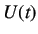 | 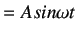 | (4.1) |
The Laplace transform of the above equation yields
| 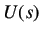 | 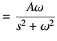 | (4.2) |
Consider the standard first order transfer function given below
| 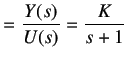 | (4.3) |
Replacing the value of U(s) from equation 4.2, we get
| 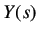 | 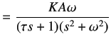 | (4.4) |
| 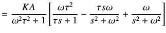 | (4.5) |
Taking Laplace Inverse, we get
| 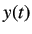 | 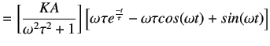 | (4.6) |
The above equation has an exponential term
 . Hence, for large value of time, its value will
approach to zero and the equation will yield a pure sine wave. One can also use trigonometric identities to make the equation
look more simple.
. Hence, for large value of time, its value will
approach to zero and the equation will yield a pure sine wave. One can also use trigonometric identities to make the equation
look more simple.
| 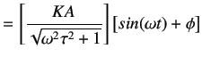 | (4.7) |
where,
| 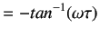 | (4.8) |
By observing the above equation, one can easily make out that for a sinusoidal input the output is also sinusoidal
but has some phase difference.
Also, the amplitude of the output signal,  , has become a function of the input signal frequency, 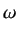.
, has become a function of the input signal frequency, 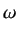.
| 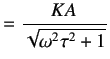 | (4.9) |
The amplitude ratio (AR) can be calculated by dividing both sides by the input signal amplitude A.
| 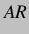 |  |
(4.10) |
Dividing the above equation by the process gain K yields the normalized amplitude ratio 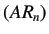
| 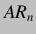 | 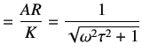 | (4.11) |